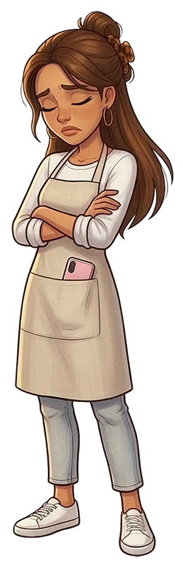

¡El fontanero no vino! Tú eres alumno de prácticas, ¿no? Perfecto.
Tú montas las tuberías, yo grabo. ¿Ves que quede recto y limpio?
El filtro ya lo pongo yo. 🎬
1 / 3
Elige el material
Antes de cada línea, Maca te dice dónde va. Tú eliges el material correcto:
multicapa, PEX o cobre. Si no recuerdas cuál va,
pulsa el '?' para ver la pista.
2 / 3
Corta recto
Desliza el dedo sobre la tubería para cortarla. Tiene que ser
perpendicular — si se tuerce, el corte queda feo
y la unión no cierra bien.
3 / 3
Monta y alinea
Arrastra la tubería al accesorio y gíralo hasta que encaje bien.
Cuando estén juntos aparece el nivel de burbuja
— centra la burbuja en verde y confirma.
Ronda 1 / 6
maca_official
DIRECTO
👁12.400
EN DIRECTO
👁1.240

Criterio de elección
Multicapa → obra nueva, instalación limpia y ordenada